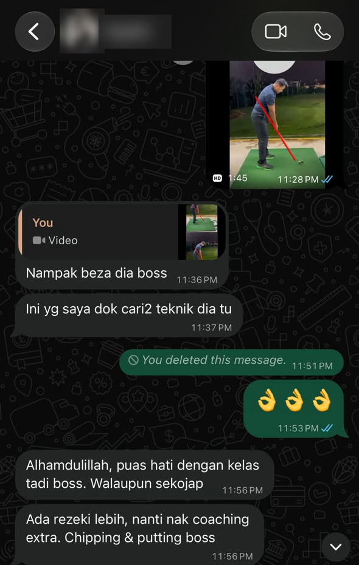

Scene
Swing
Bay 32
60 min
lesson
before
→ after: 35 minit kemudian
Take
01
Before
Take
02
After
Before
Take 01
After
Take 02
✓
Backswing sama
“
Backswing
angkat
cantik
je,
on
plane.
”
— coach
1
Tangan atas plane
“
Bila
down
swing
tu,
tangan
tu
di
atas
swing
plane.
”
— coach
2
Badan terangkat
“
Tengok,
terangkat
badan-badan.
Sebab
bodi
tak
clear.
”
— coach
1
Turun dalam plane
“
Dia
turun,
dia
dalam
plane,
so
kita
jadi
shallow
lah.
”
— coach
2
Lutut masuk
“
Lepas
tu
lutut
masuk.
”
— coach
2
Tak early extension
“
Kita
tak
adalah
kes
early
extension
tu.
”
— coach
3
Finish cantik
“
After
ni
finishing
cantik
je.
”
— coach
📝
Homework: drill
“
Banyak
kan
buat
drill
tu
lah,
yang
saya
tunjuk
tadi
tu
kan.
”
— coach
Lepas kelas, student cakap…
💬

Problem sama?
Save. Cuba kat range ↓
Turun dalam plane · lutut masuk · finish cantik